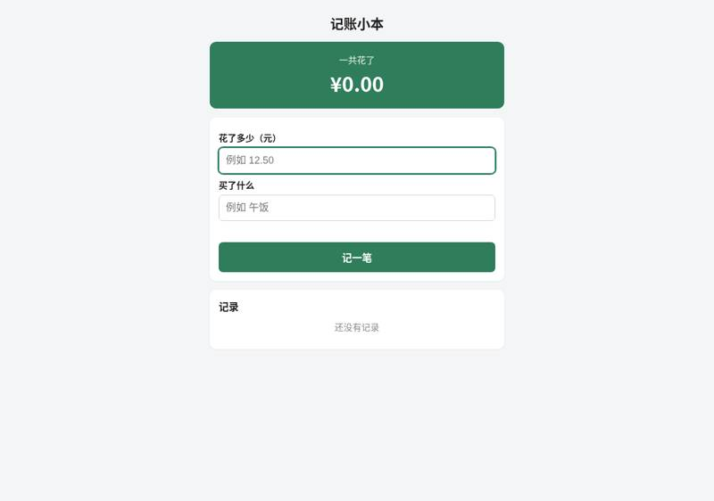
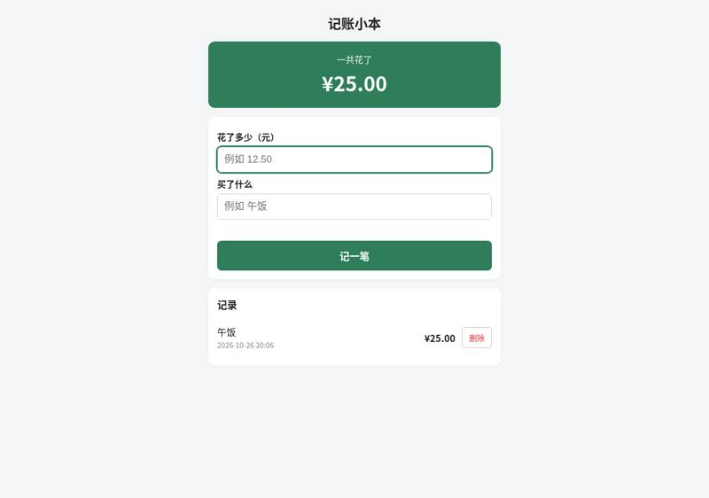
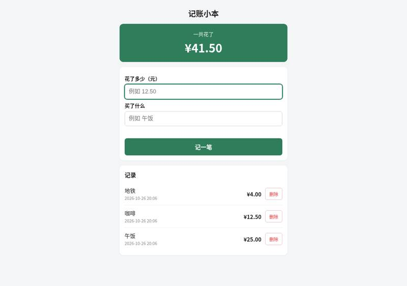
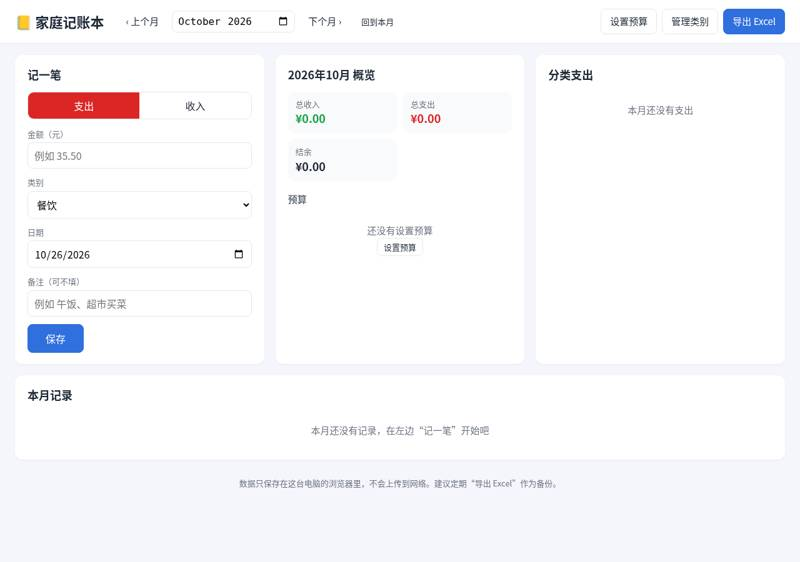
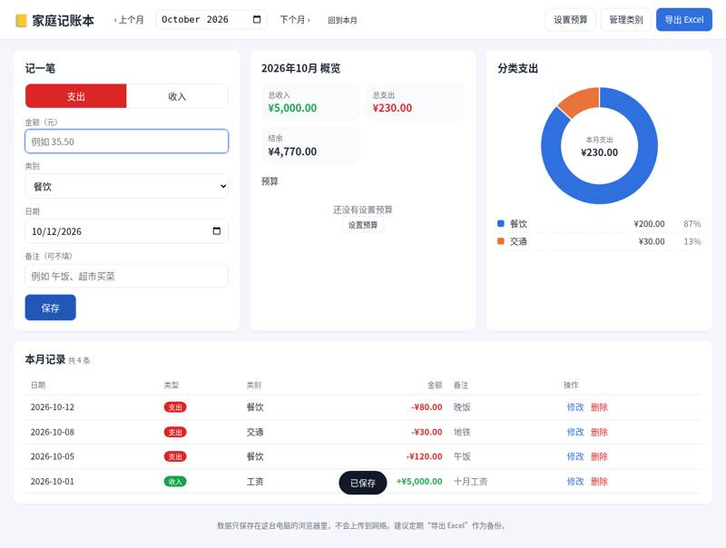
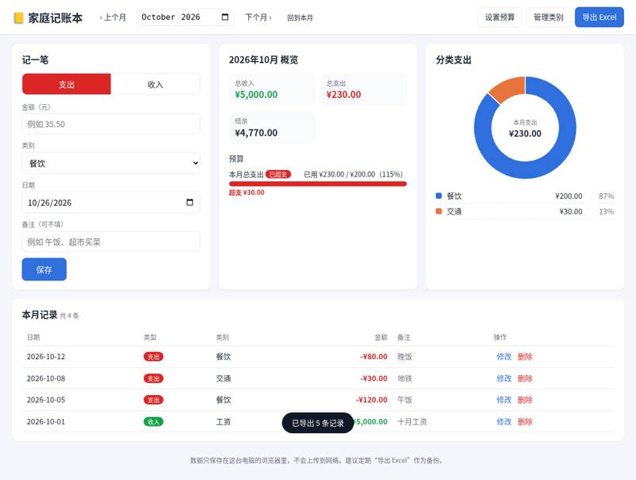
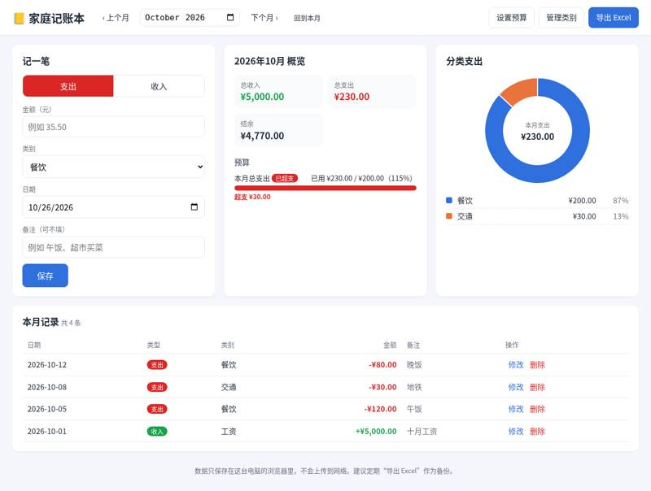

github/spec-kit: vibe coding test
Installed from its README in a throwaway sandbox, then used by Claude Code (Claude Opus 5.5) to build two apps from requests written the way someone who cannot code would write them. Whenever the build stopped to ask a question or for approval, it got the same reply. A separate tester session, with no tool loaded, opened each app in a browser and ran the checks; we went through every screenshot. All results · The task · The tester's checks
Install: SETUP: done Spec Kit (specify-cli 1.2.4.dev0) with Claude Code skills in ~/work/.claude/skills — `pip install --user uv`; `uv tool install ~/src`; `cd ~/work && specify init --here --force --non-interactive --integration claude` (repo commit 67e0f7294e6e)
One sentence: an expense page
The request, word for word: 帮我做一个记账小网页：每次花钱记一笔（花了多少、买了什么），页面上能看到一共花了多少，关掉浏览器再打开，记录还在。
Ran: all 4 checks passed. Opens: double-click. Built in 4.2 minutes (limit 30); it stopped to ask 1 time(s); how it ended: finished. Usage at API prices: $1.3 (7.6 times the run with no tool). Packages: none (plain HTML, CSS and JavaScript).
| Check | Verdict | What the tester saw | Screenshot |
|---|---|---|---|
| opens | pass | file:// page shows: '记账小本\n一共花了\n¥0.00\n花了多少（元）\n买了什么\n\n记一笔\n记录\n\n还没有记录' |  |
| records an expense | pass | list after adding: '午饭\n2026-10-26 20:06\n¥25.00\n删除'; total 25.00 |  |
| total is right | pass | total shown: ¥41.50; list: '地铁\n2026-10-26 20:06\n¥4.00\n删除\n咖啡\n2026-10-26 20:06\n¥12.50\n删除\n午饭\n2026-10-26 20:06\n¥25.00\n删除' |  |
| still there after closing and reopening | pass | after reopen total ¥41.50; list: '地铁\n2026-10-26 20:06\n¥4.00\n删除\n咖啡\n2026-10-26 20:06\n¥12.50\n删除\n午饭\n2026-10-26 20:06\n¥25.00\n删除' |  |


Where it stopped, and got the reply 「我不懂这些，你按你推荐的来，继续做。」
The tool (GitHub Spec Kit) has written the project rules and the spec. Its workflow now has a review step: you approve the spec before it moves on to planning. **What the page will do** (full spec: `specs/001-expense-tracker/spec.md`): 1. **记一笔**：填"花了多少（元）"和"买了什么"，点"记一笔"。新记录排在列表最上面，自动记下日期和时间。 2. **一共花了**：总额一直显示在页面上，精确到分（0.10 + 0.20 正好是 ¥0.30）。 3. **记录还在**：数据只存在你这台电脑的这个浏览器里，不上传到网上。关掉浏览器再打开，记录都还在。 4. **删除**：记错的一笔可以删掉，删之前会先问你确认。 5. **输入检查**：金额为空、为 0、是负数、超过两位小数或大于 1000 万，或者"买了什么"没填，都不会保存，会显示中文提示。"买了什么"最多 50 个字。 6. 双击就能打开，不用装任何东西，也不用注册账号。手机屏幕上也能用。 **这一版不做**：分类、按月统计、修改已有记录、导出、多台设备同步。另外，如果清除了浏览器数据，记录会丢失。 **Spec Kit 问你：批准这份需求吗？（approve / reject）** 如果想改哪一点（比如去掉删除功能，或者加上分类），直接告诉我。
One paragraph: a family ledger
The request, word for word: 做一个家庭记账本网页：能记收入和支出（金额、类别、日期、备注），能按月看收入、支出和结余，能看每个类别花了多少（最好有图），可以设每月预算、超了要提醒，还能把记录导出成 Excel 表格。数据存在我电脑上就行。
Ran: all 8 checks passed. Opens: double-click. Built in 11.3 minutes (limit 45); it stopped to ask 1 time(s); how it ended: finished. Usage at API prices: $3.18 (3.1 times the run with no tool). Packages: none (plain HTML, CSS and JavaScript).
| Check | Verdict | What the tester saw | Screenshot |
|---|---|---|---|
| opens | pass | file:// page shows 家庭记账本 with 记一笔 form, '2026年10月 概览' (总收入/总支出/结余 ¥0.00), 预算, 分类支出, 本月记录. Default month is October 2026. No console errors, no outside requests. |  |
| records income and expenses | pass | Used the 支出/收入 toggle, amount, category dropdown (income list: 工资/奖金/理财/兼职/其他; expense list: 餐饮/交通/购物/...), date and note. 本月记录 共 4 条: 2026-10-12 支出 餐饮 -¥80.00 晚饭; 2026-10-08 支出 交通 -¥30.00 地铁; 2026-10-05 支出 餐饮 -¥120.00 午饭; 2026-10-01 收入 工资 +¥5,000.00 十月工资. | |
| month's income, spending and balance | pass | 2026年10月 概览: 总收入 ¥5,000.00, 总支出 ¥230.00, 结余 ¥4,770.00. | |
| spending by category | pass | 分类支出 donut chart (center 本月支出 ¥230.00) with a legend list: 餐饮 ¥200.00 87%, 交通 ¥30.00 13%. |  |
| switches between months | pass | Added 999 购物 2026-09-15 (no note). After saving, the app switched the view to 2026年9月 by itself. September: 总收入 ¥0.00, 总支出 ¥999.00, 结余 -¥999.00, record 2026-09-15 支出 购物 -¥999.00, 分类 购物 ¥999.00 100%. Clicked 下个月 back to October: 总收入 ¥5,000.00, 总支出 ¥230.00, 结余 ¥4,770.00, 4 records. | |
| warns over budget | pass | 设置预算 dialog has 每月总支出预算（元） (plus optional per-category budgets); entered 200 while viewing October. 预算 section now shows '本月总支出 [已超支]' red badge, '已用 ¥230.00 / ¥200.00（115%）', full red bar, '超支 ¥30.00'. A toast '预算已保存' appeared; no popup dialog. | |
| exports a spreadsheet | pass | 导出 Excel dialog offers '只导出 2026年10月的记录' or '导出全部记录'; chose 全部. Downloaded 记账本_全部.xlsx (real Excel 2007+ file). Sheet 全部记录, columns 日期/类型/类别/金额/备注: 2026-09-15 支出 购物 999; 2026-10-01 收入 工资 5000 十月工资; 2026-10-05 支出 餐饮 120 午饭; 2026-10-08 支出 交通 30 地铁; 2026-10-12 支出 餐饮 80 晚饭; then 收入合计 5000, 支出合计 1229, 结余 3771. Amounts are numbers. |  |
| still there after closing and reopening | pass | After restart: opens on October 2026, 总收入 ¥5,000.00, 总支出 ¥230.00, 结余 ¥4,770.00, 4 October records intact, budget still shows 已超支 ¥230/¥200. 上个月 → September still has the 999 购物 record (总支出 ¥999.00). All 5 records present. |  |


Where it stopped, and got the reply 「我不懂这些，你按你推荐的来，继续做。」
The spec is written. Spec Kit's workflow has a review step here: you approve the spec before it moves on to planning. So I'm stopping to ask you. **Spec: 家庭记账本** (full text in `specs/001-family-ledger/spec.md`) 1. **记账（最重要）**：记收入或支出，包括金额、类别、日期（默认今天）、备注（选填，最多 200 字）。记录可以修改，也可以删除，删除前会先问你确认。金额写错时（比如空着、写 0、负数、超过两位小数）会用中文提示。关掉网页再打开，记录还在。 2. **按月汇总（最重要）**：选一个月，看总收入、总支出、结余。结余是负数时会标红。可以切换上个月和下个月，下面列出当月的所有记录。 3. **类别花费**：当月每个支出类别花了多少、占百分之几，从多到少排，并配一张图。 4. **预算提醒**：可以设一个每月总预算，也可以给单个类别设预算，每个月都按这个数算。花到 80% 时提示"接近预算"。超了会马上弹出提醒，并写明超了多少钱。 5. **导出 Excel**：导出本月或全部记录，生成 .xlsx 文件，列是 日期、类型、类别、金额、备注。金额是数字，可以直接求和。 **我替你定好的默认设置：** - **类别**：支出有 餐饮、交通、购物、居住、水电煤、通讯、医疗、教育、娱乐、人情、其他；收入有 工资、奖金、理财、兼职、其他。你也可以自己加类别。 - **使用范围**：只用人民币，一个家庭在一台电脑上用，不用注册账号。 - **数据**：只存在你的电脑上，不会联网。如果清除了浏览器数据，记录就没了，所以导出的 Excel 也可以当备份用。 - **这一版没有**：从 Excel 导入、周期性记账（比如每月自动记房租）。 **可以按这个规格开始做计划吗？** 回答"批准"就继续；想改什么，直接告诉我。